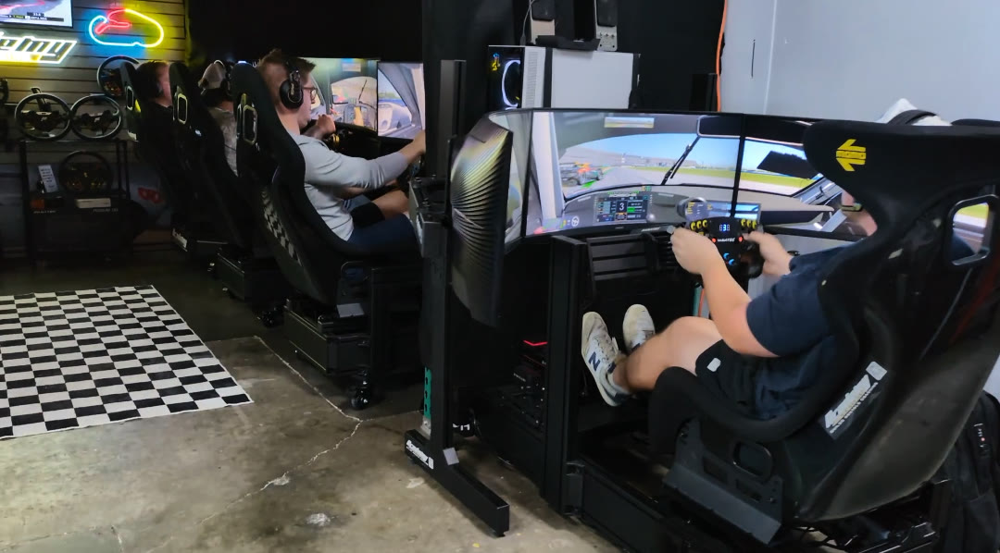

IBM Bob Hackathon · Theme 2: Modernize What Matters
Academy Sim Racing, Tampa FL
01 Team and project
I'm Malikai, owner of Academy Sim Racing, a sim racing lounge in Tampa. I'm not a developer. About five years ago I built our five websites from YouTube guides: lounge, events, builds, driver school and health.
Most of our customers now find us through those sites, so they can't go down while being fixed.
The project: modernize the Python code that builds all five sites, using IBM Bob, without changing anything a visitor sees.
02 The problem
03 The approach
Before any code changed, every file the sites ship got a SHA-256 fingerprint: 263 of them.
Every step after that had to end with the fingerprints matching and the tests passing. Bob worked from a written plan, one phase per commit, with deploy credentials switched off.
The demo proves the net works: one added character in the live homepage is caught, undone, and everything matches again.
04 How Bob was used
| Plan | Oct 5 | Read the legacy code and wrote MODERNIZATION-PLAN.md: phases P0 to P3 |
| P0–P1 | Oct 5 | Fingerprint check, test scaffold, constants.py, fingerprints extended to all 136 shipped files |
| P2 | Oct 5 | Tests that lock in old behaviour first, then one shared audit_lib.py; all five audits moved onto it, one commit each |
| P3 | Oct 5 | Tests for page generation, form handling, breadcrumbs; dry-run mode for the full build |
| CI | Oct 14 | GitHub runs every check on every push; read-only audit of the live sites (115 pages, 0 failures) |
| More | Oct 15 | Offline tests for the network tools; shared paths.py for 9 scripts; architecture diagram |
Every commit is listed in the repo (BOB-COMMITS.txt and the git history) and on the demo page.
05 Results
A fresh clone rebuilds all five sites and passes every check on GitHub. The five site audits print the same results they did before the refactor.
06 Learnings and next steps
Learned
Next
paths.pyLinks
| Demo video | youtu.be/fh56qSFPcsE |
| Demo page | seo-bob-build.netlify.app |
| Code | github.com/academysim/seo-build-bob |